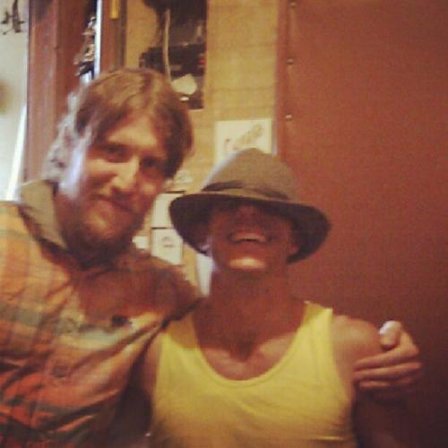
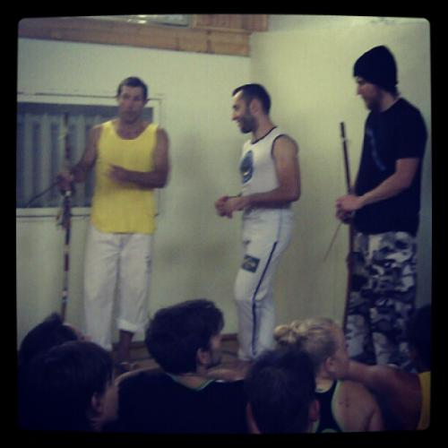
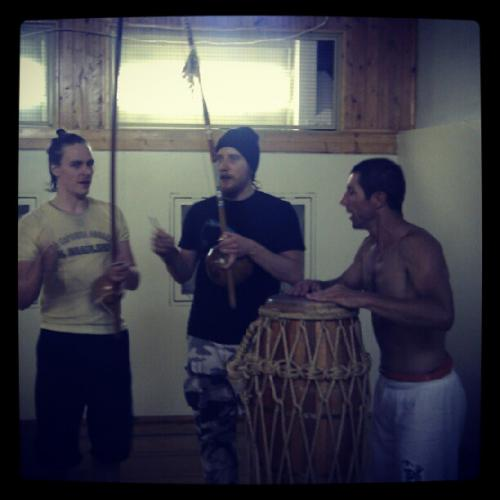
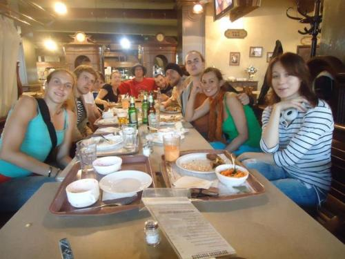
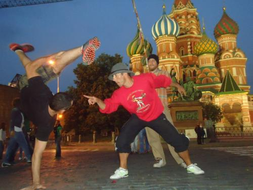
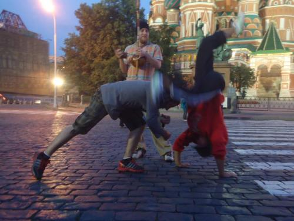
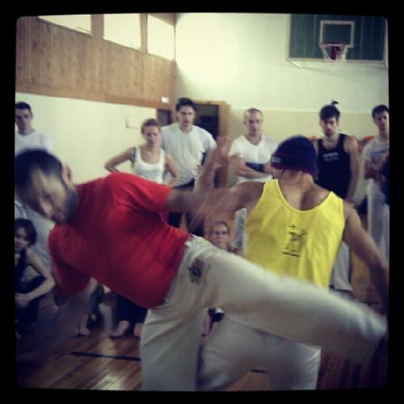
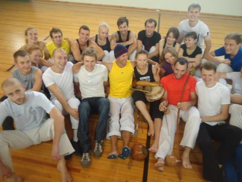
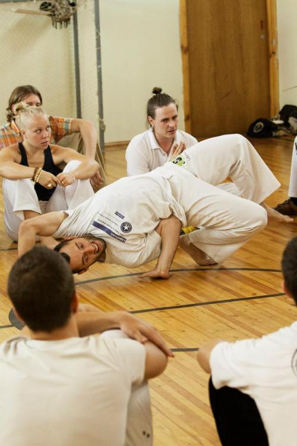
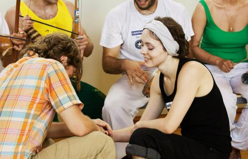

mestre pinoquio. moscow 18-19 august.
злодеям он покажет нос
и рассмешит друзей до слез,
он очень скоро будет тут,
скажите, как его зовут?
не так давно, в один распрекрасный жаркий летний полдень, беседуя в чятике ФБ с %username% avmeller я с превеликим чувством благости разузнал, что последним ведутся переговоры о первом русском визите нашего старого дорогого киломбольского друга на русские просторы. неделей позже все окончательно подтвердилось. тур в нижний, заход в санта-замкадск. ура. ура.
из истории.
некоторые из наших адептов [caveira, agulha, maritaca и др.] впервые познакомились с pinoquio на ивенте arte de gingar в португалии в году этак 2006.
те самые романтические времена когда filho de tradit с восторженными постами магистра иголкина о mestre и переводами его текстов был жив, пояса наши были зеленее зеленого, когда мы были молодыми, красивыми и не такими жирными, спившимися и скурившимися пафосными ублюдками как сейчас . :-)
по большому счету, внутри не было какого-то чувства чрезмерной эйфории.даже не было ожидания того, что вот он приедет и такого покажет, что ого-го. просто хотелось увидеть его живьем и ничего больше. внутри было очень спокойно приятно и немного волнительно. правда. приезжал человек, взгляды которого на капоэйру как средства сопротивления системе и вообще вся философия игры наиболее близки к моему
программа тренировок была совсем небольшой — два дня в нижнем, два в москве. презентация нового диска «nao e luta do patrao», запись интервью, общая рода.
я, как обычно, протупил с билетами на поезд, решив отложить все на последний момент, вследствие чего их на пятничный вечер не оказалось. пришлось вспоминать
после долгого отсутствия практики, хичхайкинг оказался на удивление быстрым — в две машины — одна до новгорода, вторая прямиком до МКАДа. поэтому в какие-то семь вечера я уже был на подъезде, чем привел в состояние когнитивного диссонанса марию sabotage, которая была еще у себя дома в рязани и планировала приехать в свою квартиру на сущевском валу ближе к часу ночи, но никак не раньше.
попросив остановиться драйвера возле поворота на ясенево, я неспеша побрел в подземку, буквально клюя носом в землю. спать хотелось адски. сквозь полусонное состояние вокруг творились странные вещи. люди вокруг меня были невероятно дружелюбны и приветливы. какой-то ультра-веселый дед-клабхед отплясывал нижний брейк возле двери вагона, дружелюбно подмигивая мне и показывая большой палец вверх, чем неиллюзорно доставил.
потом на выходе из метро на улице со мной поздоровалось несколько студентов, причем от последнего я отчетливо услышал: „как дела? тудо бень?“ ну, все, приехали, подумал я. срочно спать. прокравшись в парадную, я так и сделал, удобно растянув ноги на пожарной лестнице и подложив рюкзак под голову.
ближе к часу ночи приехала мария, с чувством жалости посмотрев на мою развалившуюся тушу возле двери и оперативно отправившая меня в душ и на койку, где я моментально вырубился и проспал как убитый часов 12.
визит буратино застал меня весьма быстро и неожиданно — за моим самым любимым на свете утренним занятием — мытьем эверестов посуды. в квартиру быстренько пробралась голодная компания из avmeller, ребят из нижнего юли и серьожи, зам. аvmeller по саботажу витек ебана valente и, наконец, Сам Он Собственной Персоной… (далее везде с большой буквы, всем благоговейно кланяться и молиться)

признаться честно, визуально ожидал немного другого. более большого и сурового, что ли. на деле pinoquio показался мне нереально маленьким, умиротворенно-скромным и даже каким-то испуганным. вот я протягиваю ему руку, эу соу камалеао, мы там с вами того в фейсбуке и все такое, а он своей накаченно-жилистой рукой жмет в ответ без всяких фамильярностей, по-отечески добро и мило так улыбается «муйто празер, гоштей». радость. радость. пир-пир-пир. даю мастеру трубку и он так ненавязчиво передает привет кавейре, после чего последний мне высказывает что-то из серии «сука, я ж чуть стакан из рук не выронил»:-)
первые общие впечатления от общения с pinoquio ну просто невероятно благостные. маленький, мускулистый, в идеальной великолепной физической форме. от него исходило обаяние — именно такое, когда ты сразу хочешь дружить с человеком и чтобы он стал твоим лучшим другом; ощущение непритязательности ко всему, достаточности и скромности. тихий, интеллигентный, без излишних запросов, без всякого гонора, без всех этих тупых гопских шуточек, пафоса и статуса звездности, характерное для большинства приезжих бразилов [как верно отметил в коменте chupa-teta]. вообще абсолютно не бразильское ощущение от человека. говорит „вежа бень“ и подмигивает. мазохист потом прям в точку сказал, что если бы все приезжие мастера капоэйры были такие как pinoquio или paahpi, то цены бы им не было.
первая дневняя тренировка была совсем коротенькой. в целом, народу было не так уж и много — человек 30-35, просто из-за небольшой площади зала было достаточно плотно. контингент был в основном «саботажевский», питерская делегация в виде пяти человек, пару человек от менину и один падаван из аше капоэйра.
саша толкнул речь, после чего представил публике pinoquio и попросил его что-нибудь сказать. на что последний смутился и очень скромно как-то вполголоса сказал: «vamos treinar?»
сам мастер ничего выдающегося не давал. жинга + несколько базовых движений.
первое, конечно, что бросалось в глаза так это его жинга. просто невозможно было оторвать глаз. очень спокойно, размеренно и неспеша. в ней не было какой-то излишней навороченности, хаотичной дерганности или наооборот механистической квадратности. просто его тело перемещалось так им образом, что оно все время оказывалось простыми обычными короткими движениями плечей под разным углами от потенциальной атаки. плюс руки, которые все время менялись, а не действовали по стандартному алгоритму „левая нога — правая рука, правая рука — левая нога“.
при всем при этом, pinoquio с детальной скурпулезностью отмечал моменты, при этом совершенно не отнимая время и не грузя людей, почему в данном случае такое-то и такое перемещение идет именно таким образом, а не иначе.
из движений мне очень понравилась meia lua na queda de rin с обратным выходом через низкую мартелу. супер клевая тема для быстрой игры с особо резвыми анголейро. чем мы с кавейрой и поспешили воспользоваться, сначала я с радостью зарядил в щи латино, а потом уже кавейра залепил мне с ноги после тренировки сука больно в глаз:-)

в конце устроили небольшую роду. я с оперативностью гепарда быстро схватил второй беримбау. pinoquio загнал всех в угол зала и попросил сделать круг как можно меньше, попросив использовать в игре побольше круговых перемещений и пасо.
и вот я аккомпанирую, а в прямом эфире звучит из его уст «peguei esse gunga, chapeu e navalha e sair por essa estrada para ver mundo rodar», у меня все стекает по штанам, а у юры и темы готовы политься слезы от нахлынувшего приступа мимими.

вообще, мастер в эти два дня в круг практически не вылезал, предпочитая батерию.
но вот он, первый момент и мазохист радостно горлопанит «SAI SAI BURATINO!», все ржут и он тоже.
перемещается он, конечно, что песец, это мало сказать. полнейшая тотальность в движениях. часовой механизм, конвейер. мази сказал, что до этого они махались полчаса без остановки в нижнем, и он жестко уронил pinoquio три или четыре раза, а тому хоть бы хны, абсолютно не менят ритм, не дергается, не заводится и продолжает рубиться. к тому же, без всяких этих многочисленных дурацких ангольских volto ao mundo, которые он кстати весьма недолюбливает в игре мастеров как признался позднее.
pinoquio неоднократно давал мне поиграть на своей супер-гунге, обклеенной наклейками из разных стран и обвешанной ленточками из баии своим персональным золотым добрао, на котором высечено что-то вроде „ilha de santa catarina 1977“. при этом никакого дискомфорта он от этого не испытывал. и абсолютно никакого пафоса из серии «гунгу может взять только старший ученик/ не трогай это моя гунга и мой добрао /мастер поет нельзя его менять. вообще никаких всех этих дурацких идеологических заебов.

днем, как обычно, массовый поход в уже привычный «вокзал» на новослободской. буратиныч невозбранно порадовал, заказав себе кружку сидра. ну а ближе к вечеру отправляемся на стандартный для всех туристов праса вермелью.
припарковав авто, мы вышли к спасской башне. большая часть площади была перекрыта строительными лесами и сценическими конструкциями в преддверии какого-то очередного «военно-музыкального парада».

началась небольшая фотосессия на фоне храма василия блаженного из серии „ты на гунге постой, а я вот такой крутую мейа луа делаю, а ты такой красивый в кеда де трес сидишь“.

набежали туристы и девочки с фотокамерами. небольшая фотосессия плавно перетекла в небольшую роду, которая через пять минут была оперативно остановлена доблестными стражами порядка, один из которых был весьма упитанного хомячьего вида.
раздается реплика примерно следующего содержания «ребят. вообще-то здесь красная площадь. здесь не место для веселья. идите вон туда за буйки (показывает в сторону москвы-реки) и там веселитесь (ага, подумал я, а там устроим веселое макулеле с омоном с бесплатным автозаком впридачу). короче, покайтесь, бесноватые. молитесь, поститесь и слушайте радио «радонеж».
как только полицаи начали отходить к машинам мы хором затянули «vamos quebrar um coquinho quando policia nao vem, quando policia chega, QUEBRA POLICIA TAMBEM!» ну а мази вообще очень проперся от этого момента, что буратинычу довелось не где-нибудь в бразилии, а в далекой россии увидеть наиболее старую форму притеснения уличной капоэйры:-) несанкционированный митинг. штраф, клетка, кутузка. vamos vadiar!
пошли дальше. спросил меня где мавзолей. я показал ему в сторону кремлевской стены — мол, там, за забором. пришлось взять его и поднять чтоб видно было:-)
после прогулки теплым домашним вечером мы с pinoquio под бутылочку холодного свежего крушовице завели душевную беседу на разные темы. говорили о многом, но в основном о том, что волнует обоих. политика, экономика, социальное положение в россии, антиглобализм, капитализм, повстанческие и партизанские движения и многое другое. после зимней поездки в колумбию я не мог отвыкнуть от испанской речи. поэтому строил свои фразы на корявом портуньоле. затем большую часть времени говорил мастер, а я молча слушал.
рассказывал он практически все то о чем писал в манифесте «потерянное звено цепи». о дискриминации, о лжи, о перевирании истории капоэйры, об использовании имен старых мастеров капоэйры как брэнда со стороны современных капоэйристов. о дебильной идеологии и ограничениях. рассказывал о своем знакомстве с bigodinho и caicara, о старых родах тридцатилетней давности. о своей школе. о флорианополисе. о своей преподавательской работе с детьми. да много еще чего…спать легли в четвертом часу ночи.

утренне-дневная тренировка отметилась связками заходы за спину и ронянием человека. смешно было когда юра показал на меня пальцем и сказал pinoquio, что вот этого кабана хрен свалишь с ног. местре попытался меня уронить и у него тоже ничего не вышло — упал сам. поржали. впоследствии дима космос меня все-таки свалил, но при этом порвал мне штаны аккурат промеж ног, негодяй.
затем состоялось небольшое муз.занятие. даже не занятие, а просто небольшие поправки и экскурс по поводу батерии. говорил о том, что для него наиболее оптимально когда инструменты выстроены не в линию, а полукругом и находятся не по середине, а как бы с краю роды. он отметил, что раньше люди постоянно чекали не идут ли полицаи, поэтому выстраивались подобным образом, чтобы видеть друг друга. pinoquio сказал о том, что, конечно, же главенствующую звуковую роль играют беримбау, а в пандейро и атабак не лупят что есть дури, но вообще для него не принципиально в каком порядке расставлены инструменты, рассказывал о том, что знает школы где используется больше трех беримбау и ничего, никто не кому не полощет мозг на эту тему.

после тренировки часть людей разбрелась шататься по городу, а часть отправилась на запись интервью с мастером. на лайв — интервью я не попал, о чем, кстати, жалею, говорят, было интересно. п.с. женечка, если есть возможность скинь что-нибудь из записанного в туб:-)
вечером — большая рода и презентация диска.
но по итогу вышло, конечно же, как обычно, не так как планировали. было очень приятно познакомиться с Лидером Нашего Святого Карма — Рейтинга и пообщаться с живой легендой ом саи интернета вживую. нарисовалось несколько старых физиономий, из которых был, например, леха ousado со своей женой и маленькой дочерью. (леха, несмотря на то, что уже давно не тренируется, ничуть не растерял своего бешеного куража в игре и очччень неплохо зарубился с pinoquio), леха tripa и др.
московские жингаровцы, из которых очень хотелось увидеть menino и колю-клубня, были в отъезде в калининграде. маритака традиционно вообще забил хуй и не отвечал на звонки (впрочем это неудивительно).
вообще гостей из других групп было довольно мало. не было представителей контемпораньи, КДОшников, музензы, инби, агьядорады, топазио. большие молодцы девчонки и ряд ребят из ФИКА, которые не постеснялись придти и активно поиграть. а вот имах не пришел. и, признаться честно, очень разочаровал этим игнором. и при чем, насколько выяснилось, он знал о предстоящей роде.

в целом, рода получилась хорошей, этакой камерной и домашней. хорошо описаны впечатления тут: http://capoeira.in/blog/739.html#comment8950.

от себя еще добавлю, что очень понравился момент когда раскачалась батерия, а девушки одна краше другой давали жару на танцполе. да и концовка была тоже сильной, парни оторвались вовсю.
ближе к ночи мы, размазывая сопли как маленькие дети, проводили pinoquio в аэропорт, а он раздарил все что можно раздарить — теме отдал свой свитер, сереже свои штаны, отдал футболки. создалось ощущение, что он совсем без одежды отчалил в португалию:-)
что ж, подытоживая произошедшее, огромный респект мазохисту, который вытащил pinoquio в россию. конечно же, было совсем чуть-чуть. но больше и ничего и не надо было. как я уже писал, я был счастлив только от того, что просто повидал его. спасибо тебе, дорогой друг из флорианополиса, когда-нибудь я навещу вашу землю обетованную.
se liga moco…presta atencao…a capoeira nao e luta do patrao.